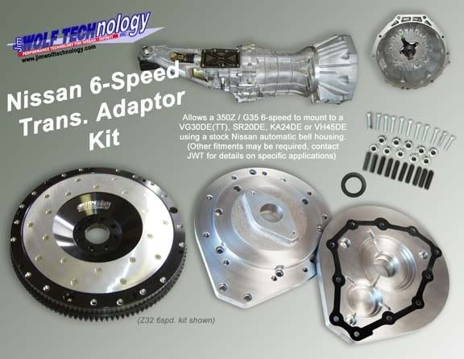

-
I would just like to double check since I'm a little new to the Z31 world. According to the information in this thread an 88 drive shaft from a 5spd Turbo 2 seater coupe WILL fit my 87 5spd Turbo 2 seater coupe. Am I correct in understanding this information? I just found a driveshaft from an 88 and I'm ready to place my order, but I just want to make sure I'm getting the right part. -
Assuming your tranny is the R30A like it is supposed to be for an 87 turbo.Caster wrote: I would just like to double check since I'm a little new to the Z31 world. According to the information in this thread an 88 drive shaft from a 5spd Turbo 2 seater coupe WILL fit my 87 5spd Turbo 2 seater coupe. Am I correct in understanding this information? I just found a driveshaft from an 88 and I'm ready to place my order, but I just want to make sure I'm getting the right part.85 Z31 6.0 LSX turbo 766whp/792wtq
04 GTO, LS6, big cam, porting, N20… underway for summertime daily driver. -
"All manual transmissions are the same length, so hence all manual driveshafts for two seat cars are also the same length.
Transmissions each have their own unique slip-yoke on the driveshaft, and length for their application:
~Automatic
~NA manual
~Turbo manual (T5)
~87+ turbo manual (30A)
~Automatic, 2+2
~NA Manual, 2+2
There are two diff flanges:
Early (rectangle)
Late all 87+ (round/square bolt pattern)"
The tranny in my 87 NA 5 spd went kaput.
I have a simple question… will a transmission from a 84-86 NA 5spd pop right in to my 87 NA 5 spd? Can I keep the existing drive shaft that's in my 87? I've been scouring the web for this answer and have yet to receive a straight one. Thanks for your help -
Anyone have the length of a couple driveshaft with an auto trans?shooting for power, but coming up short. -
This needs to be added:
"non-serviceable" U-joints can be replaced by grinding the tabs out of the stock U-joint ears to push out the old U-Joints, and then using part number 430-11A (common to many manufacturers, as it is a design template number), and the c-clips will be inserted from the inside using expander-ring pliers.
servicing instructions included here:
http://www.rockforddriveline.com/Staked … ctions.htm -
I'm running a 4/87 t Transmission, rear subframe assy, LSD and drive shaft in my 86T, after installing rear poly subframe bushing and poly rear diff mount my drive shaft has no free-play. I believe my drive shaft is to long??. my drive shaft would not fit back in with a solid rear Diff mount. I hope to get it out next week and have it shortened .5 inches. -
I just noticed this. I would highly recommend against it as I've had this done twice in the past. What you will find is that the driveshafts are almost always out of balance afterward. It could be a temporary solution but not recommended.Careless wrote: This needs to be added:
"non-serviceable" U-joints can be replaced by grinding the tabs out of the stock U-joint ears to push out the old U-Joints, and then using part number 430-11A (common to many manufacturers, as it is a design template number), and the c-clips will be inserted from the inside using expander-ring pliers.
servicing instructions included here:
http://www.rockforddriveline.com/Staked … ctions.htm545 RWHP & 540 RWTQOriginally posted by Andrew84zx
tell her your car is so fast it will make her panties fly off

-
[quote]FlawleZ wrote:the website I found the number on stated to have it balanced afterward, so i didn't think to post here.Originally posted by Careless -
Since this is a "Z31 driveshaft and other driveline compatability information" sticky.
There has been one thing bugging me for a while.
I have a EURO z31 87+ turbo. That doesn't really matter but If I ever wanted to buy a new LSD (epicness). I would have a lot of trouble looking for one. I stumbled on this by accident when I was searching for some info about other stuff that there is a Kaaz (maybe other) unit that is pretty much bolt-on. Its from an s13/s14 for an OPEN diff car. Part number: SAN2655. I'm guessing this is for a 2-way. If I am not mistaken they can do 1.5 way also. Price: a little over a grand. Well if this fits then I'm guessing any LSD unit for the s13/14 will work also (Open diff)
Can anyone confirm this?
ThanksCOMMAND AWESOME -
Yes, it will work. Also Quaife has one for $1069.75DavidA wrote: Since this is a "Z31 driveshaft and other driveline compatability information" sticky.
There has been one thing bugging me for a while.
I have a EURO z31 87+ turbo. That doesn't really matter but If I ever wanted to buy a new LSD (epicness). I would have a lot of trouble looking for one. I stumbled on this by accident when I was searching for some info about other stuff that there is a Kaaz (maybe other) unit that is pretty much bolt-on. Its from an s13/s14 for an OPEN diff car. Part number: SAN2655. I'm guessing this is for a 2-way. If I am not mistaken they can do 1.5 way also. Price: a little over a grand. Well if this fits then I'm guessing any LSD unit for the s13/14 will work also (Open diff)
Can anyone confirm this?
Thanks
http://www.quaifelsd.com/
1988 300ZX Turbo, Shiro Special #760
1988 300ZX Turbo Automatic (wife's car)
1991 Hard-body 2WD
http://zccw.org/zccw/?page_id=1215 -
Awesome- info like this should be stickied or something. Same thing with short throw shifters, interchangeable parts and so on. In the driveline section alone, half of the posts are pretty much the same. Will this shifter fit and so on. Just a suggestion. It'll be easier for noobs to find info fast without all the flaming :nanan?re
I am not keen on making websites but I would like to see a site with pretty much ALL the info about the Z31 because searching for a stupid part number or a little piece of info takes a while and sometimes gets frustrating. I love this site and all you guys (not in a gay way or anything) :lol: but making the ULTIMATE site would be a dream come true.COMMAND AWESOME -
Ok.... so to swap a 5 speed into my 84 2+2 turbo. what driveshaft am i looking for? Are the tranny mount/crossmember all the same? Also while im in there, would a lighter weight flywheel be of any advantage?Turbo Rotories… 60% of the time.... they work every time.. -
Hello, iam new on this forum i i dont write alot its because iam french.
**EDIT**v2.0 :-D
i have found answer to all my question and put them into this image
*the only real question is how hard is making a hybrid u-joint NA-Turbo?
Thanks David -
Here's another option.

I wrap my paper weights in glitter. -
If you own EUDM and want to put 30A, you need to swap front part of driveshaft.pabloqc wrote: Hello, iam new on this forum i i dont write alot its because iam french.
**EDIT**v2.0 :-D
i have found answer to all my question and put them into this image
*the only real question is how hard is making a hybrid u-joint NA-Turbo?
Thanks David
EUDM MT (na/t) has support bearing, 2 parts , and 3 u-joints, so simply swap front part.
(you can find Bruce's (Finland) webpage, through z31clubdotcom, he done this in 2004)

Copyright © 2006–. All rights reserved. Privacy Policy